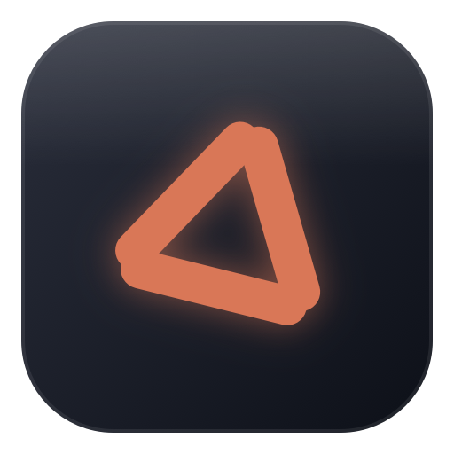
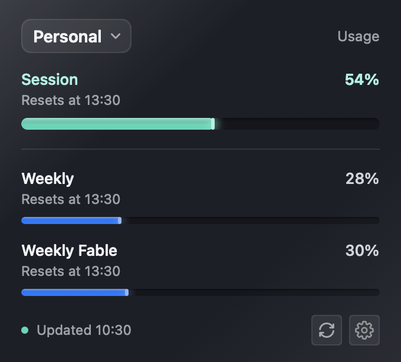
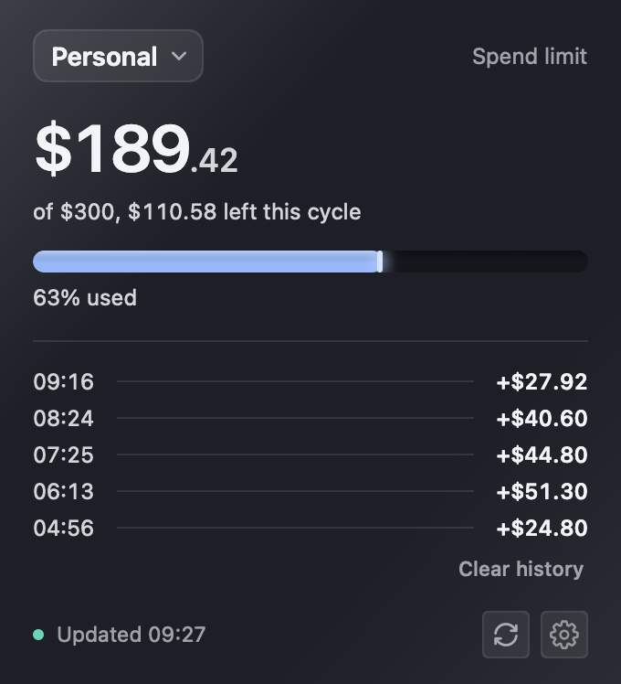

Your claude.ai usage, in the menu bar. How much of your session and weekly limits you have left, without opening a browser tab.
A panel under the menu bar. Nothing else — no window, no Dock icon. Which of the two you see depends on how your Claude account is billed.


Two ways in. They install the same app — pick whichever you are comfortable with. Either way it keeps itself up to date: new versions download in the background and install while the panel is closed.
No terminal needed.
Nothing to download again — the app updates itself.
If you already use brew.
brew install --cask tkachenkobogdan/tap/claude-spend-barOn 1.4.3 or earlier? Upgrade once by hand; from 1.5.0 on it updates itself:
brew upgrade --cask claude-spend-barHomebrew installs it but does not start it. To open it the first time:
Or from the same terminal:
open -a "Claude Spend Bar"Spotlight will not find it until macOS has indexed it, so use Finder or the command above rather than ⌘Space.
Nothing appears in the Dock — look for the clay triangle in the menu bar, at the top right of your screen. The app adds itself to your login items the first time it runs, so it is there after a restart. You can turn that off in its settings.
The app reads your usage as you — which means it needs the session key your browser already holds. It is kept in your Mac's Keychain and sent to claude.ai and nowhere else.
⌥⌘I to open the Web Inspector, then select the
Network tab.usage in the filter box, then click one of the usage requests.Cookie row, and copy the whole value.If the Web Inspector is missing in Safari, turn on Show features for web developers in Safari ▸ Settings ▸ Advanced.
This app is not made by, endorsed by, or affiliated with Anthropic. It reads the same internal claude.ai endpoints your browser uses when you look at your own usage page. Those endpoints are not a published API: they carry no compatibility promise and can change or disappear at any time, without notice.
When that happens the app stops showing a reading until it is updated. Treat the numbers as a convenience, not as a billing record — the usage page in claude.ai remains the authority.
It reads only your own account, sends your session key to claude.ai and nowhere else, and never writes anything back.